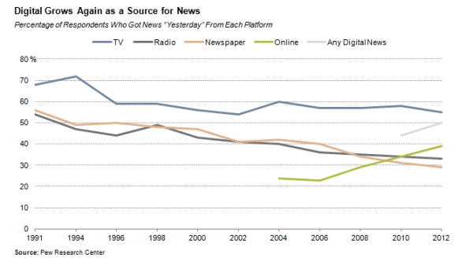

For years, journalism has been bound by the hierarchical structure of the newsroom and the news industry. Major news publications such as the New York Times, Wall Street Journal, the Guardian and other local news outlets dominated the industry and information from these outlets was delivered to the public via traditional print publications such as newspapers and magazines. In this hierarchical structure the power lies within the editor or news director whose job revolves around decision making. From here, this top down structure places journalists in a middleman position. Journalists act as a filter for relevant and important news for the public. Their job consists of deconstructing issues and presenting them to their audiences with their best interests in mind. The audience is placed at the bottom of the information food chain as they consume only the news that the newsrooms and journalists deem relevant.
Within this structure, there is a strict adherence to ethical laws and codes. The traditional journalist functions as a gatekeeper. A gatekeeper is essentially the person that "guards" the gate of information flow. Gatekeepers, with their knowledge and adherence to ethical codes, essentially control the trends and topics that appear within the news. This gatekeeper role is fundamental to the journalism profession as traditionally, journalists have been the ones to shape and construct the publics view of reality. Because of this large responsibility, journalism is a profession that necessitates an established level of control. An example of why this control is necessary, from The Handbook of Journalism Studies by Karin Wahl-Jorgensen and Thomas Hanitzsch, highlights the importance of the journalist's duty to disaster coverage. News in general is driven by the coverage of unexpected events and journalists are required to cover accounts of a wide variety of disasters. With this coverage of unexpected, highly sensitive events and tragedies, the ethical and moral values that journalists follow become hugely important.
As the digital age offers attractive new alternatives for obtaining news, many traditional print publications are struggling in the face of rapidly decreasing readership and plummeting advertising revenue. In fact, many are struggling just to stay afloat. According to Paul Grabowicz of the UC Berkeley Knight Digital Media Center, traditional publications face rising difficulties:
As more people consume news online, news organizations face the dilemma of reallocating resources to attract new readers and viewers while still trying to hold on to their existing, and usually aging, print or broadcast audiences. Financial viability for newspapers and most magazines, at least for now, requires retaining as many existing print readers as possible. Yet the trends are clear: people, especially the young, are turning to the Internet for more and more of their news.
Paul Grabowicz
The following graph illustrates the steady decline of print newspapers compared to digital media:
The upward-sloping green and gray lines indicate that rapidly growing numbers of users are getting their news online or from any digital source; however, the downward-sloping orange line shows the decline of traditional newspaper readership. This gives a sense of the challenge facing traditional news outlets in this new digital age.